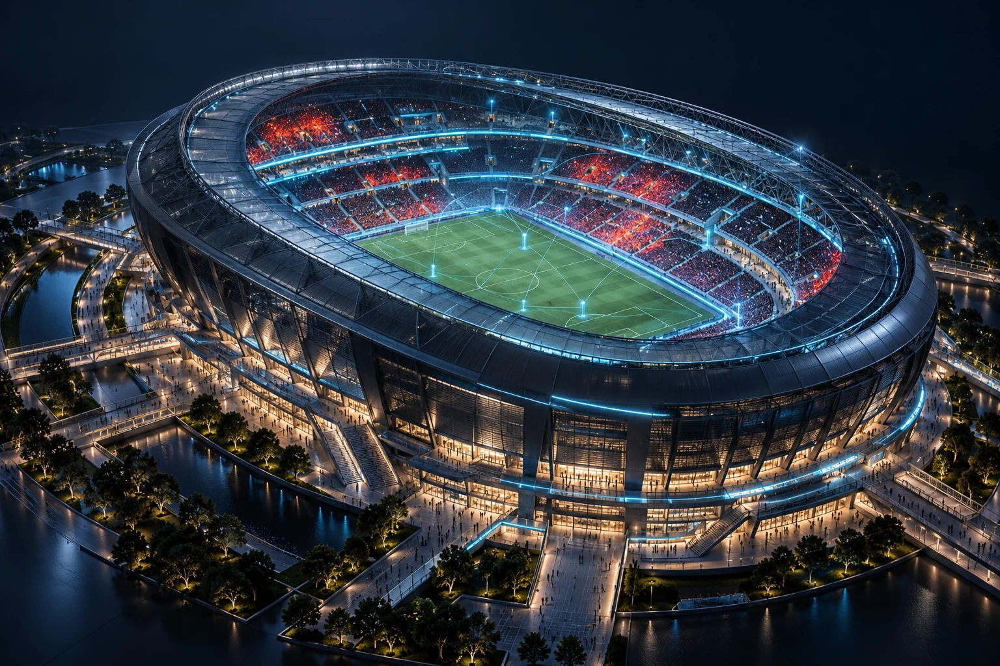

A shared picture of crowd safety.
Connecting wearable telemetry, CCTV observations, and gate events in a venue digital twin, with people in control of the response.

- Project
- Safety intelligence · SIH 2026 prototype
- Engineering focus
- Real-time systems, risk fusion, and operator workflows
- Technology
- Next.js · TypeScript · FastAPI · PostgreSQL · Redis · scikit-learn
The problem
At a crowded venue, a wearable alert, a camera observation, and a gate count describe different parts of the same situation. When those signals remain separate, an operator has to reconstruct the context before deciding what to do. MGHSIS explores a single workflow for understanding individual distress, crowd conditions, and inconsistencies between observed and registered populations.
The approach
The project organizes that workflow around a venue digital twin. Incoming observations feed a FastAPI backend, Redis-backed live state, and PostgreSQL history. Risk outputs return to the Next.js operations interface, where an operator can inspect the evidence, explore a scenario, and authorize an intervention.
- Ingest observations
- Fuse zone signals
- Score and explain risk
- Inspect the digital twin
- Authorize and compare a response
Key decisions
Separate live state from durable history
Redis supports the live operational stream while PostgreSQL retains observations and history. The architecture gives the interface a current view without treating the live cache as the historical record.
The tradeoff. Keeping both views consistent adds coordination work when events arrive late or services reconnect.
Make simulation part of the workflow
Deterministic simulators and scenario controls make congestion, distress, and crowd-redirection demonstrations repeatable. Operators can compare projected conditions before and after an intervention.
The tradeoff. A repeatable simulation is useful for development, but it does not establish performance in a real crowd.
Explain risk and keep authorization human
The interface pairs risk levels with reasons, confidence, and recommended actions. The response workflow requires human authorization rather than directly controlling physical gates.
The tradeoff. Useful decision support depends on the quality of incoming observations and the operator's interpretation.
Where it stands
The repository documents an operational prototype with a command centre, venue twin, searchable band records, alerts, scenario simulation, and intervention verification. It demonstrates how sensing, prediction, visualization, and response can fit into one application.
Current scope
The telemetry and ML evaluation are synthetic. Reported model scores describe the synthetic generator, not real-world safety performance. Physical hardware integration and venue-specific validation remain separate from the demonstration; human-risk output is non-diagnostic.
The next step toward a field pilot would be calibrated sensor data, temporal validation, and independent review of the operational workflow.
Explore the build
- Project overview and implemented scope

- Architecture and service boundaries
- Model contract and evaluation limits
Repository sources reviewed on 17 October 2026. The tradeoffs above reflect an analysis of the implementation and documentation.